Digunakan untuk mencetak summary Penjualan yang terjadi selama periode yantelah ditentukan. Jika kita juga ingin membuat summary Report Penjualan by periode. Caranya hampir sama.
1. Kita buat sumber datanya dulu, kita bisa memodifikasi qry_Penjualanprd yang kita buat. Caranya Pada jendela database klik Query klik qry_Penjualanprd klik Design
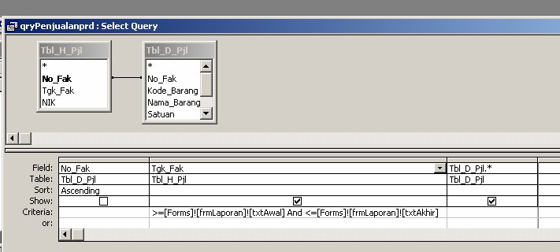
Kemudian kita rubah menjadi seperti ini. Pada query ini anda akan melihat Total dibawah sort. Untuk memunculkannya klik tombol S pada toolbar.
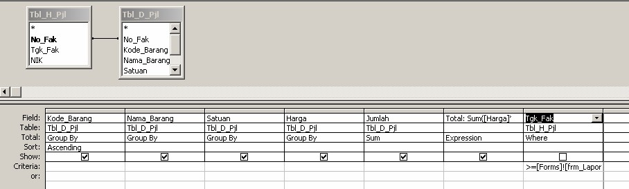
klik File pilih Save As, simpan dengan nama qry_SumPenjualanprd
2. Sekarang mari kita buat reportnya
- Pada Jendela database klik Report lalu klik New. Pada jendela New report Pilih AutoReport Tabular
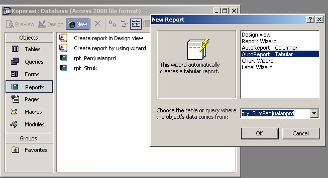
Klik OK, jika muncul input box diklik OK saja, hasilnya
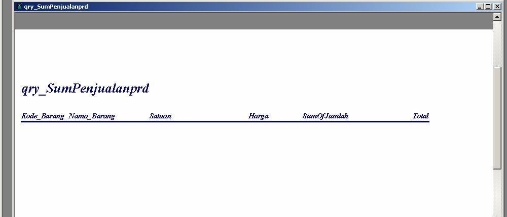
- Klik Design View untuk masuk ke mode design
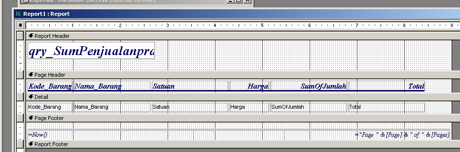
Design Report diatas masih kurang bagus, untuk itu kita perlu merubahnya, caranya sama seperti pada design form. Design Report setelah di rubah
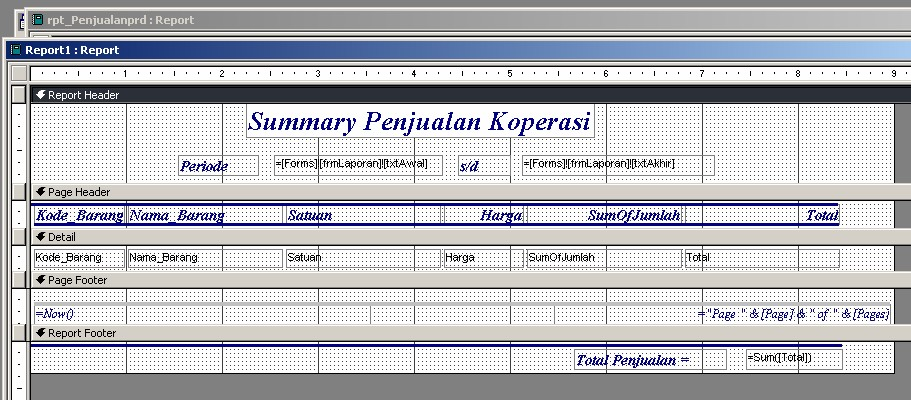
- Simpan Report dengan nama rpt_sum_Penjualanprd
Sekarang kita buat report untuk laporan seluruh penjualan.
Report Seluruh Penjualan Barang.
Digunakan untuk mencetak seluruh penjualan yang pernah terjadi dari awal samapi sekarang. Berikut langkah-langkah pembuatan report ini
1. Buat sumber datanya, kebetulan sumber datanya tidak jauh beda dengan qry_Penjualan prd. Untuk itu kita klik qry_Penjualanprd, klik design kemudian rubah isinya menjadi seperti dibawah ini. Criteria pada Tgk_Fak dihapus.
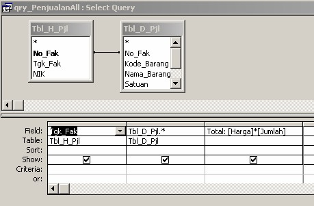
Klik File ?? Save as simpan dengan nama qry_PenjualanAll
2. Sekarang kita buat reportnya. Pada Jendela database klik Report lalu klik New. Pada jendela New report Pilih AutoReport Tabular
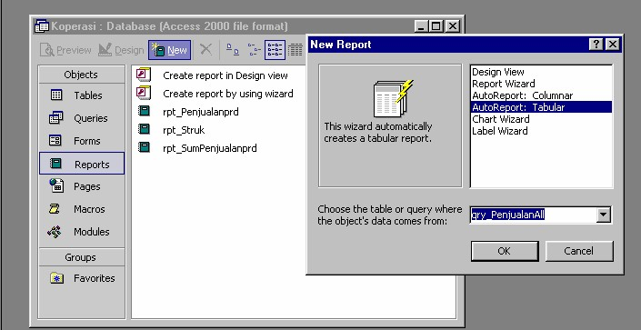
Klik OK maka Report akan muncul
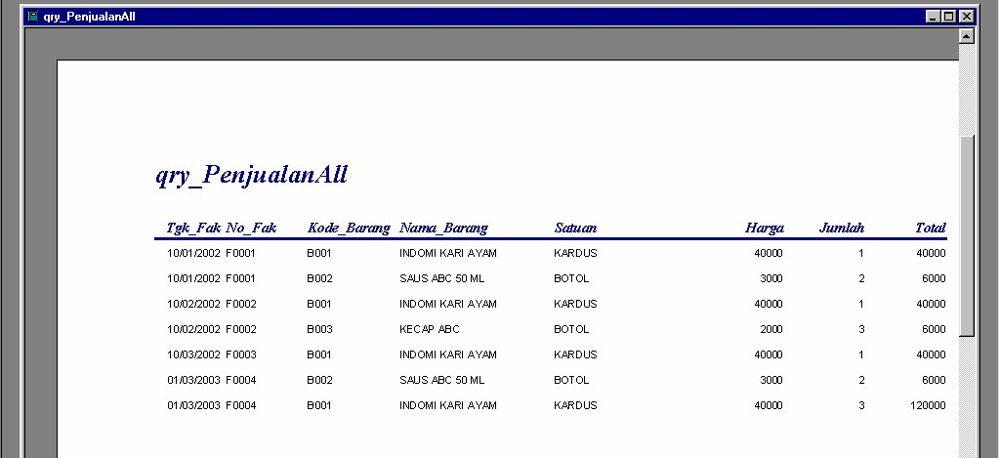
Masuk ke mode design, kemudian arahkan pointer mouse ke bagian report, klik kanan, pilih Sorting and Grooping, seting seperti dibawah ini
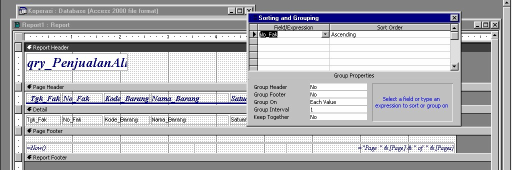
Karena Sortnya berdasarkan No_Fak untuk itu No_Fak Geser ke Posisi Tgk_Fak dan sebaliknya. Modifikasi Report menjadi seperti ini
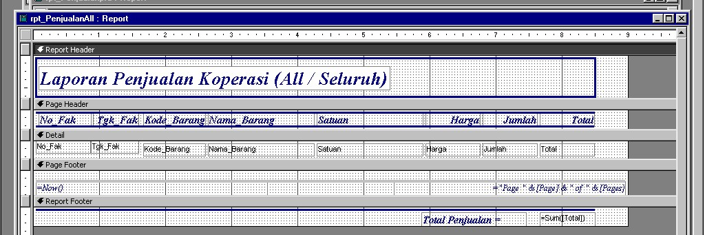
Simpan dengan nama rpt_PenjualanAll
Report Summary Report Seluruh Penjualan
Digunakan untuk mencetak summary penjualan yang terjadi dari awal samapai sekarang. Berikut langkah-langkah pembuatan report ini
1. Seperti biasa kita buat sumber datanya dulu, Sumber datanya hampir sama dengan qry_SumPenjualanprd. Untuk itu klik qry_SumPenjualanprd lalu klik design, Hapus criteria yang ada pada field Tgk_Fak
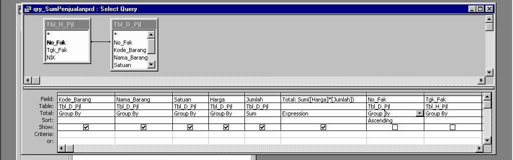
Simpan Query dengan nama qry_SumPenjualanAll
2. Sekarang kita buat reportnya. Pada Jendela database klik Report lalu klik New. Pada jendela New report Pilih AutoReport Tabular dan qry_sumPenjualanAll
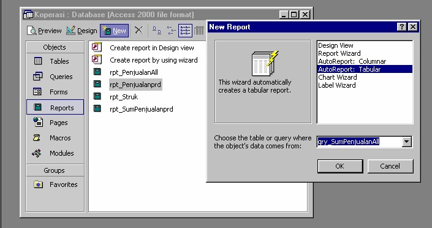
Klik OK maka Report akan muncul
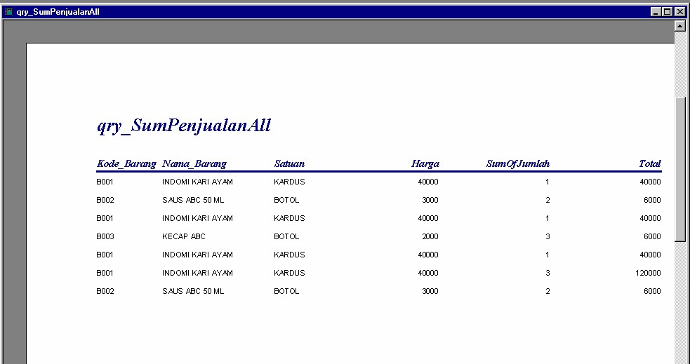
Masuk Ke mode design
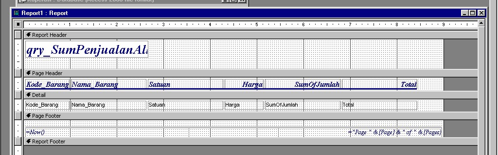
Kemudian modifikasi Report menjadi seperti ini
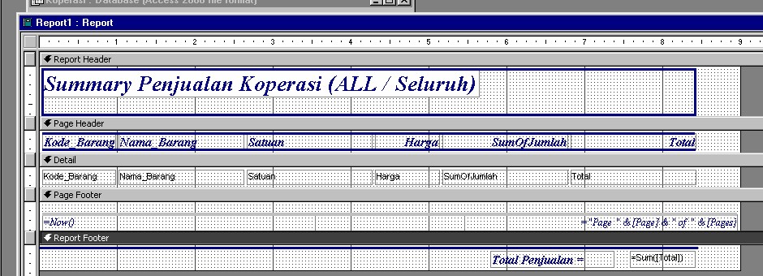
Simpan dengan nama rpt_SumPenjualanAll
Pembuatan Report Belanja Karyawan
Tentunya kita mau tahu dong karyawan yang belanjanya paling banyak dikoperasi. Untuk kita perlu buat Report Belanja Karyawan, caranya
1. Buat sumber datanya, buat query seperti dibawah ini
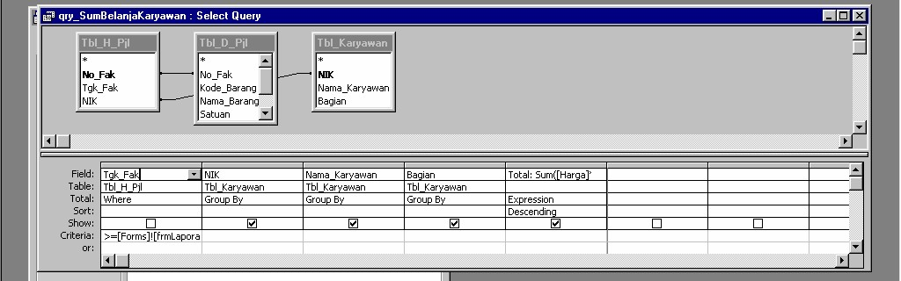
Simpan Query dengan nama qry_SumBelanjaKaryawan
3. Sekarang kita buat reportnya. Pada Jendela database klik Report lalu klik New. Pada jendela New report Pilih AutoReport Tabular dan qry_sumPenjualanAll
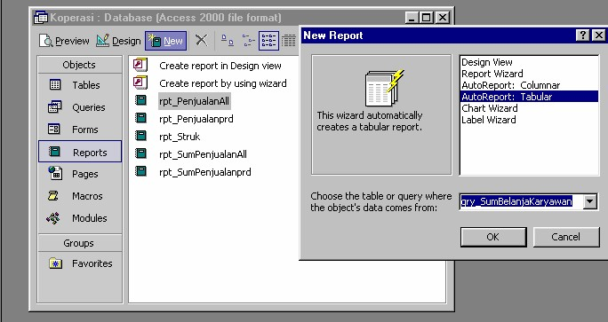
Klik OK akan muncul dua kali input box sis masing-masing dengan 1/1/2 dan 1/31/2. Jika kita ingin mengetahui Karyawan yang belanja pada tanggal 1 Jauari 2002 s.d 31 januari 2002. maka Report akan muncul
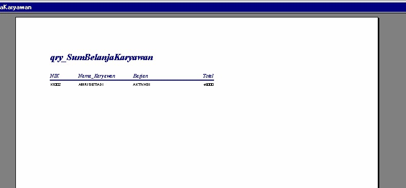
Masuk Ke mode design
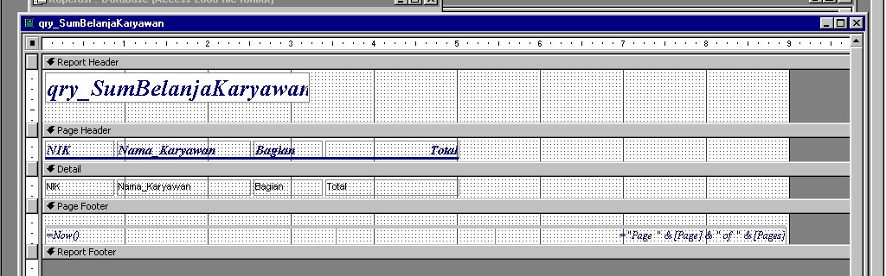
Kemudian modifikasi Report menjadi seperti ini
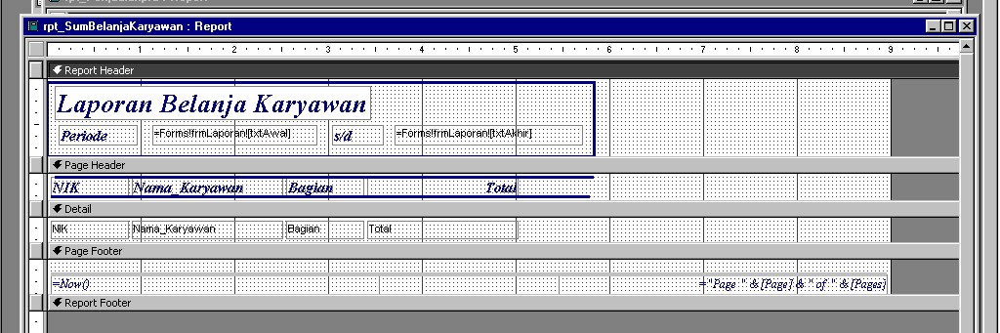
Simpan dengan nama rpt_SumBelanjaKaryawan
Semua Report telah selesai kita buat, kita kembali ke Form Laporan untuk menambahkan Tombol Tombol untuk mengaktifkan report yang telah kita buat
Masuk ke mode design dari frm_laporan
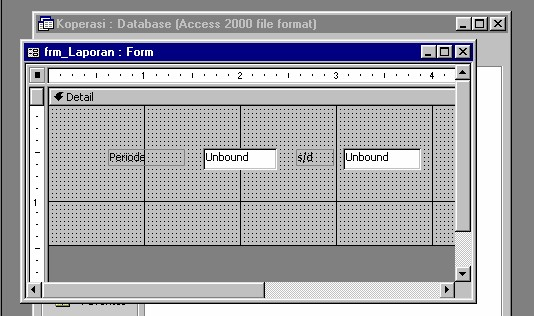
Pada Toolbox klik CommandButton lalu gambarkan di Form
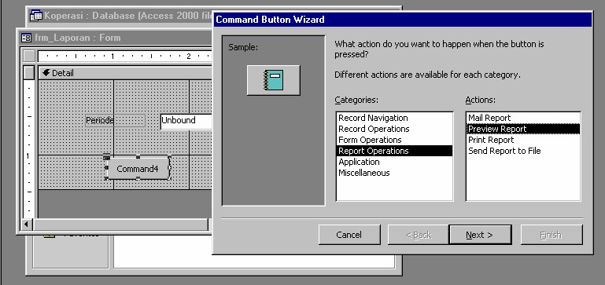
Klik Next, Pilih Report yang ingin di tampilkan misalanya kita ingin menampilkan Report Pejualan Periode, kita pilih rpt_Penjualanprd
Klik Next, Klik Text, pada kotak ketik Penjualan by Periode
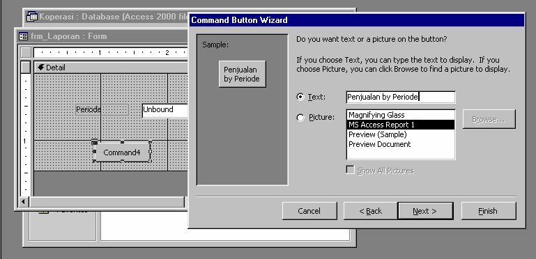
Klik Next, Pada kotak ketik cmd_Penjulanprd (Sesuai dengan Report yang diaktifkan)
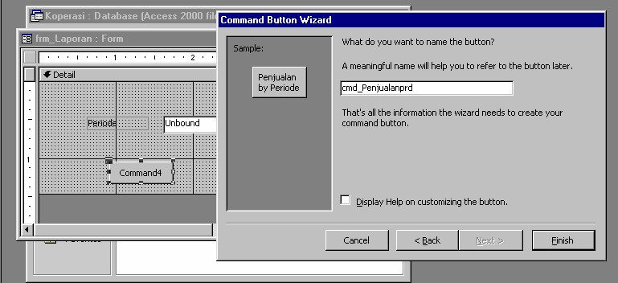
Klik Finish. Maka akan terlihat
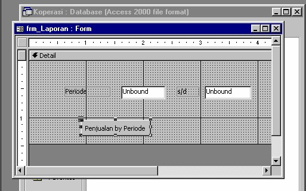
Tambahkan 4 CommandButton lagi untuk menampilkan Report yang lainnya, caranya sama seperti diatas. Berikut Settingan pada wizard untuk 4 CommandButton tersebut
Wizard |
Command Button 2 |
Command Button 3 |
Command Button 4 |
Command Button 5 |
1 |
sama |
sama |
sama |
Sama |
2 |
Rpt_SumPenjualanprd |
Rpt_PenjualanAll |
Rpt_SumPenjualanAll |
Rpt_BelanjaKaryawan |
3 |
Summary Penjualan by Periode |
Penjualan Seluruhnya |
Summary Penjualan Seluruhnya |
Belanja Karyawan |
4 |
Cmd_Sumpjlprd |
Cmd_PjlAll |
Cmd_SumPjlAll |
Cmd_bljKar |
Tambahkan satu CommandButton yang Fungsinya untuk keluar dari form ini caranya sama seperti pembutan Tombol keluar pad form Barang. Berikut Design
Form yang sudah jadi, Jangan lupa pad form Poperti set scrollbar, Record Selector, Navigation Button dan Dividing Line.
Copyright © Herlan Lesmana
Created with the Freeware Edition of HelpNDoc: Full featured multi-format Help generator